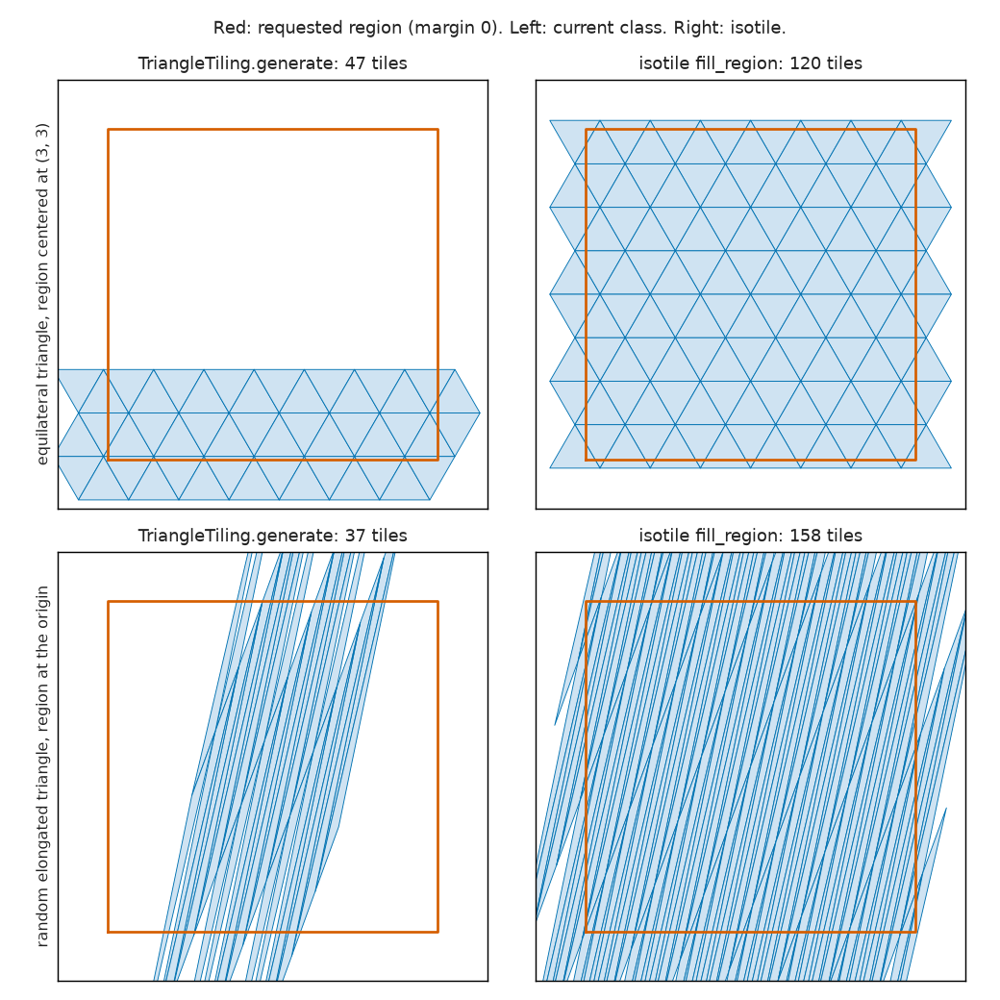
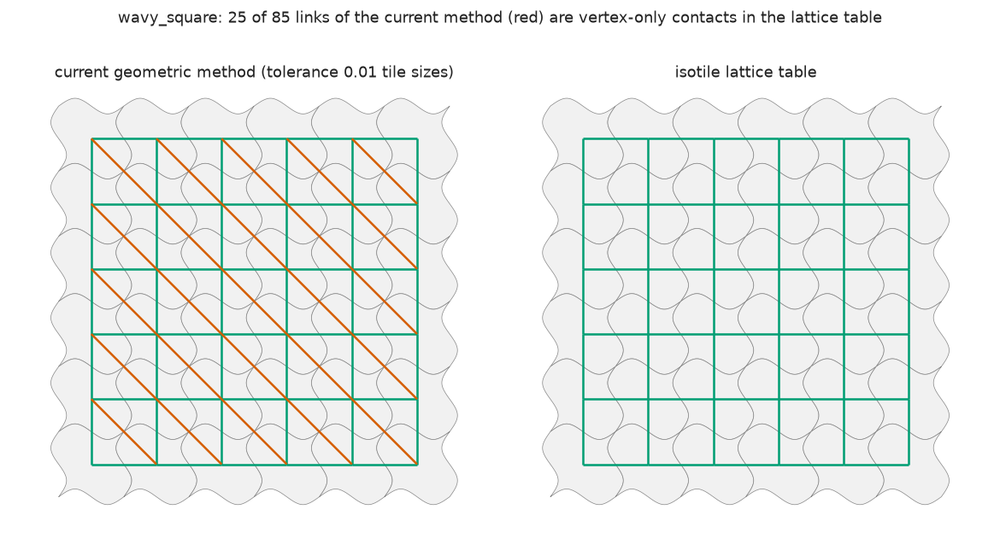
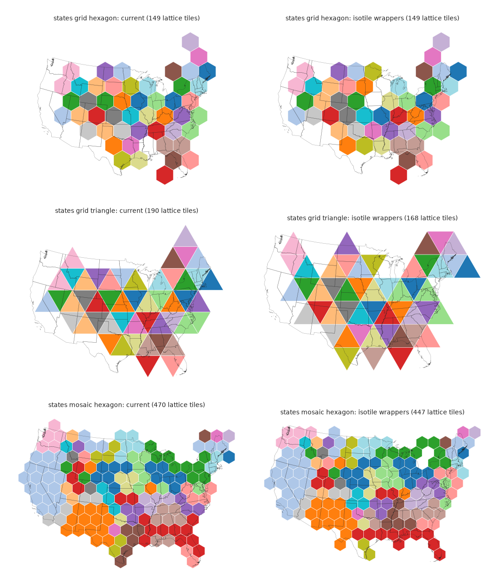

Design of phase 3 of the isotile plan, in which carto-flow drops tactile and its own tiling code (2,855 lines in tiling.py) for the isotile library. The page inventories every tactile-relevant symbol and the public API, gives a verdict for each function, designs thin wrappers over isotile and checks them with a prototype (the 19 named tilings are reproduced without an unmatched tile or an adjacency difference; 589 of 610 existing tests pass and each of the 21 failures is explained), lists the behavior changes with a recommendation each, plans the golden comparison with a tolerance taken from the measured effect of the lattice position, profiles the 340 to 590 s of IsohedralTiling.generate (96 percent is its quadratic deduplication loop), plans the test migration and a four-PR split, and ends with the risks and the twelve decisions, all settled.
Phase 3 of the plan in proposal-isohedral-tiling-library (section 8.2 and the review of section 11) makes carto-flow use isotile. This page does not implement it. It fixes what is replaced, what stays, how the wrappers look, which behaviors change, how the result is checked and in which PRs it lands. Every number marked as measured was produced by a script in this directory.
Steps 0 to 3 of section 8.1 are merged; step 4 is not started. The proposal stays open until step 4 lands. Dates are the merge times in UTC from GitHub.
| PR | Repository | Content | Merged | Merge commit |
|---|---|---|---|---|
| 5 | isotile | step 0: preset amplitude, neighbor_lists, cover precision (isotile-step-0-pr) | 2026-10-27 | 392484c |
| 190 | carto-flow | step 1: tilings over isotile, tactile and the grid generator removed (isotile-adoption-step-1-pr) | 2026-10-28 | 4140204 |
| 193 | carto-flow | step 2: sparse tile adjacency in TilingResult (isotile-adoption-step-2-pr) | 2026-10-28 | 0365919 |
| 195 | carto-flow | step 3: rotation and offset of the tile lattice (isotile-adoption-step-3-pr) | 2026-10-28 | f6b0a0c |
Follow-ups that the proposal did not list:
| PR | Repository | Content | Merged | Merge commit |
|---|---|---|---|---|
| 196 | carto-flow | the cost loops of the grid layout assignment as array operations: GridBasedLayout on the 432 districts with square or hexagon tiles takes about 2 s instead of 126 to 137 s; the assignments of 9 grid cases are bit-identical (carto-flow-194-grid-orientation-cost-pr) | 2026-10-28 | 0ef643c |
| 8 | isotile | fill_region takes an offset (lattice phase in one pass) (isotile-offset-pr) | 2026-10-28 | 3f9edbb |
| 9 | isotile | cover and fill_region take outline; the default None selects tiles by the curved polygon if the tiling has edge curves (isotile-curved-cover-pr) | 2026-10-28 | a4625b7 |
| 197 | carto-flow | pin moves to isotile a4625b7; Tiling.with_offset uses the fill_region offset; curved tilings use the curved outline (isotile-adoption-pin-bump-pr) | 2026-10-28 | f746bc1 |
What was built, against the proposal:
generate_grid, compute_grid_symbol_size and TileAdjacencyType are removed, tactile is replaced by an isotile dependency pinned to a commit, and TilingResult.adjacency and vertex_adjacency are sparse.cover with curved tilings (section 4.5) was settled in isotile (PR 9); carto-flow accepted the new default (PR 197), which adds boundary tiles for some presets without changing any region's tile on the states.Open issues:
| Issue | Title |
|---|---|
| carto-flow#191 | repair_contiguity: slow and incomplete on some lattice positions (districts by state, hexagon) |
| carto-flow#192 | Mosaic calibration leaves core tiles unassigned on symmetric regions |
| carto-flow#198 | GridBasedLayout: unused margin tiles change the assignment (refinement does not converge, island fix moves many regions) |
Step 4 (documentation, CHANGELOG, docs/migrating-to-3.0.md, the PyPI dependency isotile>=0.1.0) waits for the isotile 0.1.0 release (section 8.3). Until then the dependency is the git pin.
Files in this directory:
| File | Content |
|---|---|
| wrapper_proto.py | the wrapper design as code: builds a replacement tiling.py from the current file and writes it into a copy of the carto-flow sources (1,325 lines against 2,855) |
| poc_compare.py, poc_compare.txt | proof of concept 1: the 19 named cases, current classes against isotile (section 5.2); regions far from the origin; lattice stability under symmetric expansion |
| poc_presets.py, poc_presets.txt | proof of concept 2: the 15 presets and the 81 types (section 5.3) |
| random_shapes.py, random_shapes.txt | holes in random triangle and quadrilateral tilings, current classes against isotile (section 4.5) |
| cover_precision.py, cover_precision.txt | cover far from the origin (section 2.4) |
| profile_generate.py, profile_generate.txt | timing and cProfile of the current IsohedralTiling.generate and the isotile equivalent (section 6) |
| perf_isotile.py, perf_isotile.txt | isotile at 2,000 to 40,000 tiles, sparse against dense adjacency (section 6) |
| perf_wrapper.py, perf_wrapper_old.txt, perf_wrapper_new.txt | generate of the four families, current against wrapper prototype (section 6) |
| mosaic_time.py, mosaic_time.txt, mosaic_time_rerun.txt | the mosaic layout on the districts, current against wrapper prototype; the first run on the slower machine state, the rerun after disabling the energy-saving setting (section 6) |
| golden_layouts.py, golden_compare.txt | grid and mosaic layouts on the US states and the congressional districts, current against wrapper prototype (section 5.4) |
| phase_noise.py, phase_noise.txt | effect of the lattice position alone on a grid layout; sets the tolerance (section 5.4) |
| tests_with_wrappers.txt | the existing tests run against the wrapper prototype (section 7) |
| make_figures.py | the three figures |
Commands (a scratch venv; the carto-flow checkout is not modified):
uv venv --python 3.12 venv
uv pip install --python venv/bin/python -e /home/fakl/carto-flow -e <git archive of isotile origin/main>
venv/bin/python poc_compare.py > poc_compare.txt # the other scripts the same way
venv/bin/python wrapper_proto.py /home/fakl/carto-flow <copy dir> # then PYTHONPATH=<copy dir>/src
cd /home/fakl/carto-flow && venv/bin/python <this directory>/make_figures.py| Question | Result |
|---|---|
| How much carto-flow code does isotile replace? | symbol_cartogram/tiling.py loses 1,805 of its 2,855 lines (the four generate methods, the adjacency helpers, all of IsohedralTiling except the Tiling interface); the prototype wrappers need about 300 lines. adjacency.py and geo_utils/adjacency.py do not use tactile or tiling classes and stay; grid.py (generate_grid, compute_grid_symbol_size, which nothing in src calls) is deleted with its 57 tests, and TileAdjacencyType is removed (section 4.13). No other module of the package imports tactile; pyproject.toml gets isotile instead. |
| Do thin wrappers reproduce the 19 named cases? | Yes, with the lattice anchored as the current class anchors it: all 3,673 current tiles have an isotile tile with the same centroid, the largest vertex distance is 2.0e-11 of the tile size (hexagon; the others at most 1e-14), edge and vertex-only adjacency differ in 0 pairs, rotation and flip in 0 tiles. 409 of the 3,673 current tiles (11 percent) do not overlap the padded region, and one tile that does (clockwise scalene triangle) is missing from the current class. |
| The 15 presets and the 81 types? | 81 types at the defaults: vertex gap 3.3e-15, adjacency identical. Presets: polygons identical except puzzle_piece (isotile samples 110 points on a spline with 11 control points, carto-flow 100; gap 0.8 percent of the tile size) and wavy_triangle, whose preset data differ (amplitude 0.15 in carto-flow, 0.12 in isotile; an isotile fix, section 2.4). The current geometric adjacency reports 81 and 116 vertex-only contacts as edges in wavy_square and scalloped_quad. |
| Existing tests against the wrapper prototype? | 589 of the 610 tests of the 13 relevant files pass. The 21 failures: 13 test a private helper that is deleted, 3 test behavior that changes on purpose (a curve on an I edge, invalid curves), 1 an error message, 1 an exact float, 3 pin an outcome that depends on the lattice (section 7). |
| Do the layouts change? | By the position of the lattice, not in kind. On 11 cases (grid and mosaic, states and districts) the mean distance of a region from its tile changes by -14 to +24 percent; the same code with the lattice shifted by fractions of a tile changes it by up to 34 percent (new square grid 0.71 to 0.96; hexagon grid 1.20 to 1.49). The mosaic layout of the states with triangles has 3 non-contiguous regions instead of 1; every other case has 0 before and after. |
Where does the time go in IsohedralTiling.generate? | In the pairwise deduplication loop: 2,842,920 distance computations for 2,385 tiles (n(n-1)/2), 22.6 of 23.6 s (96 percent); tactile's fill takes 0.20 s. Time grows with exponent 1.94 (hexagon) and 1.69 (curved preset). The isotile equivalent, with polygons and adjacency, takes 0.047 s for 2,000 tiles (290 times faster) and 0.12 s for 4,000 (400 times); 0.25 s for 10,300. The four families have no such loop; their generate gets 1.5 to 4 times faster, 20 times with adjacency for triangles. |
| Is the mosaic layout slower on the new lattice? | Districts, hexagon, morph=False, machine at normal speed: 3.7 s now, 8.4 s with the wrapper prototype. The first measurement (7.9 s and 17.4 s) ran on a machine about 2 times slower, so the 2 times slowdown was machine speed. The remaining factor 2.3 is in _chain_swap_repair (below 0.5 s now, 4.39 s with the wrappers), not in tile generation. The cause (more repair work on the new lattice phase) is a hypothesis; step 1 measures three more inputs. |
| Holes and the origin | The current triangle and quadrilateral tilings leave holes in 39 and 34 of 60 random shapes and return no tile at all when the region is more than about its own size from the origin (0 tiles for a 2 x 2 region at (10, 10)); the isotile tilings cover all 600 shapes. The current IsohedralTiling.generate lacks 118 of 9,747 region tiles in 18 of the 81 types. The grid layout's rotation rotates the tile set about the origin: for data 8e6 m from it the mean displacement is 12.2 tile sizes instead of 1.3. |
| What does the GUI need from carto-flow? | Nothing that is not in isotile already: generation from bounds, tile count and margin is fill_region; type info, presets, serialization, validity, symmetry and outlines are isotile API. The only carto-flow call left in the GUI is a text snippet. No carto-flow code needs to move into isotile for the GUI (section 2.3). |
| What changes in isotile? | Three small changes, no new concept: the wavy_triangle data, TileSet.neighbor_lists (bulk neighbor access; neighbors(i) rebuilds the matrix on each call, about 3 ms at 10,300 tiles) and recentering in cover (holes of up to 5e-5 of the area appear at distances of 4e6 tile sizes from the origin). Section 2.4 also lists seven candidates that were rejected. |
| PR split | isotile: one small PR first (step 0, started). carto-flow: (1) tilings over isotile with golden fixtures, deleting generate_grid, compute_grid_symbol_size and TileAdjacencyType (layouts take isotile's adjacency kind strings), (2) sparse adjacency, (3) rotation and offset layout options, (4) documentation, dependency and migration guide. Sections 8 and 9 give order, risk and the decisions. |
symbol_cartogram/tiling.py (2,855 lines at a126c0d)Public means importable without a leading underscore; "exported" means in carto_flow.symbol_cartogram.__all__.
| Symbol | Lines | Visibility | Used by |
|---|---|---|---|
DEFAULT_BOUNDS, DEFAULT_N_TILES | 47 to 52 | public, not exported | Tiling.generate defaults; tests/test_tilings.py imports DEFAULT_N_TILES |
TileAdjacencyType | 60 to 65 | exported | generate(adjacency_type=); removed in step 1 (section 4.13) |
TileTransform | 73 to 90 | exported | the layouts that place symbols on tiles (grid, mosaic) |
TilingResult (fields polygons, transforms, adjacency, vertex_adjacency, tile_size, inscribed_radius, canonical_tile, n_base_vertices; centers, n_tiles, rotate, plot, plot_tile) | 93 to 376 | exported | grid, mosaic, TiledLayoutResult, SymbolCartogram.save/load, plot_tiling |
Tiling (ABC: generate, canonical_tile, canonical_symbol, tile_size_for_symbol_size, symbol_size_for_tile_size, from_polygon, plot_tile; _n_base_vertices, _resolve_generate_args) | 384 to 582 | exported | everything that takes tiling= |
_plot_polygon_tile | 589 to 658 | private | Tiling.plot_tile, TilingResult.plot_tile |
_apply_margin | 661 to 666 | private | the five generate methods |
_compute_adjacency_from_lattice, _compute_adjacency_from_lattice_naive | 669 to 740 | private | square and hexagon generate; the naive twin only by 13 tests |
_compute_adjacency_matrices, _compute_adjacency_geometric | 743 to 823 | private | triangle, quadrilateral and isohedral generate |
SquareTiling | 831 to 912 | exported | generate is 853 to 912 |
_create_hexagon, HexagonTiling(pointy_top) | 920 to 1053 | HexagonTiling exported | generate is 969 to 1053; it never reads pointy_top |
TriangleTiling(tile) with equilateral, right_isosceles, right, isosceles, from_polygon | 1061 to 1282 | exported | generate is 1159 to 1282 |
QuadrilateralTiling(tile) with parallelogram, rectangle, rhombus, trapezoid, from_polygon | 1290 to 1545 | exported | generate is 1413 to 1545 |
IsohedralTiling(tiling_type, parameters, edge_curves, edge_curve_modes) | 1553 to 2798 | exported | IsohedralTileSymbol, presets, the GUI |
- _enforce_edge_symmetry, _build_prototile, _interpolate_curve | 1622 to 1756 | private | the constructor, generate |
- available_types, find_types | 1800 to 1897 | public | docs, the GUI |
- _PRESETS (15 presets), from_preset, list_presets | 1899 to 2166 | _PRESETS private | resolve_tiling, a docs example, the GUI; tests/test_tilings.py parametrizes over _PRESETS |
- to_dict, from_dict, save, load | 2169 to 2252 | public | the GUI reads the same format |
- type_info, describe | 2254 to 2441 | public | docs, tests, the GUI |
- plot_prototile | 2443 to 2646 | public, styled | docs |
- generate | 2648 to 2798 | public | all layouts that use an isohedral tiling |
- canonical_tile, _n_base_vertices, canonical_symbol, tile_size_for_symbol_size, from_polygon (raises) | 1758 to 1798 | public and private | IsohedralTileSymbol, layouts |
_TILING_REGISTRY, resolve_tiling | 2805 to 2855 | resolve_tiling exported | GridBasedLayout, MosaicLayout |
The only import of tactile in the package is in this file (from tactile import ... in 15 places); pyproject.toml lists tactile>=0.1.0 as a dependency and a mypy override tactile.*. Outside the package only the untracked _deferred/ UI code and old plans mention it. The untracked src/carto_flow/mosaic_cartogram/ (superseded, slated for deletion) also imports symbol_cartogram.tiling; it has to be deleted before or with the first PR.
| File | What it uses |
|---|---|
symbol_cartogram/__init__.py | exports the names of section 1.3; loses the exports of generate_grid, compute_grid_symbol_size and TileAdjacencyType |
layouts/grid/__init__.py (178 to 380) | resolve_tiling, generate(bounds, tile_size), TilingResult.rotate, centers, dense adjacency and vertex_adjacency (7 places), transforms, tile_size, polygons |
layouts/grid/_placement.py | dense tile adjacency in 5 functions (fill_internal_holes, _fix_island_assignments, _bfs_distance_matrix, bfs_expand_assignments, assign_to_grid_hungarian; np.where(adj[t]), argwhere, adj[:, j], sum(axis=1)): 29 lines |
layouts/mosaic/_calibration.py | generate in a calibration loop (an n_tiles=1 probe, up to _MAX_ADJUST trial builds without adjacency, one final build on bounds expanded by buffer_rings + 0.5 tile sizes), canonical_tile.area, result.adjacency[t] rows into adj_list |
layouts/mosaic/__init__.py, _assignment.py | polygons, transforms, tile_size, symbol_size_for_tile_size; adj_list as a list of lists |
layouts/layout_result.py, visualization.py | TiledLayoutResult.tiling_result, plot_tiling (polygons) |
result.py (631 to 756) | SymbolCartogram.save writes polygons, transforms, tile_size, inscribed_radius, canonical_tile, n_base_vertices (not the adjacency); load rebuilds a TilingResult with an all-False (n, n) adjacency |
symbols.py (567 to 690) | IsohedralTileSymbol builds an IsohedralTiling and takes its canonical_tile for the unit polygon; TileSymbol wraps the canonical_tile of the triangle and quadrilateral tilings |
grid.py | an independent grid generator (section 2.2), no tiling classes, no caller in src; deleted in step 1 |
adjacency.py, geo_utils/adjacency.py | region adjacency of real geometries (tolerance, shared length); not tile adjacency |
| docs | docs/reference/symbol_cartogram/tiling.md (mkdocstrings of the module); docs/explanations/tiling-system.md (describes tactile and TilingResult, and says inscribed_radius is the largest inscribed circle and used by the layouts, but the code computes the distance from the centroid to the boundary and only serialization reads it); examples plot_symbol_plot_tiling.py, plot_symbol_plot_tiling_2.py (from_preset("wavy_triangle")), plot_symbol_cartogram.py, plot_symbol_styling.py and the tutorial basic-symbol-cartogram.ipynb (HexagonTiling() on the states); README.md; the mentions of generate_grid, compute_grid_symbol_size and TileAdjacencyType go |
The layout options and calls that take a TileAdjacencyType take the strings "edge", "vertex" or "vertex-only" instead.
No test, notebook, doc or example calls HexagonTiling(pointy_top=False). The shapes used outside tests/test_tilings.py: TriangleTiling.equilateral(), right_isosceles(), QuadrilateralTiling.parallelogram(), rhombus(), trapezoid(0.5), the strings "triangle" and "quadrilateral", and the preset wavy_triangle. No JSON design file, no saved edge curve and no custom edge_curves exist in tests, docs, notebooks or examples beyond the 15 presets and tests/test_tilings.py.
From carto_flow.symbol_cartogram (nothing tiling-related is exported from carto_flow itself):
| Name | Changes? |
|---|---|
SquareTiling, HexagonTiling, TriangleTiling, QuadrilateralTiling, IsohedralTiling | constructors and convenience classmethods keep their signatures; the tile set returned by generate changes (boundary rule, lattice position, order) and HexagonTiling(pointy_top=False) becomes flat-top |
Tiling | new rotated(angle); generate signature unchanged |
TilingResult | adjacency and vertex_adjacency change type from ndarray to scipy.sparse.csr_array (breaking); new optional field tile_set |
TileTransform, resolve_tiling | unchanged |
TileAdjacencyType | removed (breaking); generate and the layouts take isotile's AdjacencyKind strings "edge", "vertex" and "vertex-only" (the enum values were already "edge" and "vertex"; "vertex-only" becomes available) |
TilingPlotResult, TilingGridPlotResult, PrototilePlotResult, plot_tiling, TileSymbol, IsohedralTileSymbol, GridBasedLayout(Options), MosaicLayout(Options), GridMetrics, MosaicMetrics | unchanged signatures, except for the adjacency type (strings); GridBasedLayoutOptions.rotation rotates about the region center; the grid and mosaic options gain offset (section 4.10) |
generate_grid, compute_grid_symbol_size | removed (breaking, section 2.2) |
IsohedralTiling methods available_types, find_types, from_preset, list_presets, to_dict, from_dict, save, load, type_info, describe, plot_prototile | kept as delegates to isotile (decision 3 of section 9); to_dict writes format 1.1 |
module-level DEFAULT_BOUNDS, DEFAULT_N_TILES | unchanged |
private _PRESETS, _ih, _type, _edge_curves, _unit_tile, the adjacency helpers | removed or reimplemented; the GUI reads _ih, _type and _edge_curves and moves to isotile in phase 4 |
Principle (from the plan): generic geometry lives in isotile; whatever the GUI needs lives in isotile; code that depends on regions or values stays in carto-flow.
| Concern | isotile |
|---|---|
| Tilings of the four families and the 81 types | IsohedralTiling.square(), .hexagon(pointy_top), .triangle(vertices), .quadrilateral(vertices), IsohedralTiling(type, parameters) |
| Fill and cover of a region, tile size from a tile count, margin | fill_region(bounds, n_tiles= or tile_size=, margin=), cover, fill |
| Adjacency (edge, edge or vertex, vertex only) | TileSet.adjacency(kind), sparse boolean matrices from the lattice table; AdjacencyKind ("edge", "vertex", "vertex-only") is also the option type of generate and the layouts |
| Edge curves, symmetry, interpolation, outlines | edge_curves, edge_curve_modes, enforce_symmetry, interpolate, prototile(curved=), edge_outlines, TileSet.polygons(curved=) |
| Validity | check_prototile and the constructor (raises ValueError) |
| Frame (scale, rotation, position) | frame, with_frame, rotated, scaled; fill_region sets scale and position from the region and keeps the orientation |
| Type metadata, presets, serialization, plotting | get_type(n).info(), describe, find_types, tiling_types, list_presets, from_preset, to_dict/from_dict/save/load, isotile.plot |
Stays in carto-flow: the Tiling interface and resolve_tiling (string names for the layouts), TilingResult, TileTransform, the symbols (canonical_symbol, tile_size_for_symbol_size, symbol_size_for_tile_size, IsohedralTileSymbol, TileSymbol), plot and plot_tile (they use PlotStyle), all layouts and assignment code, and the region adjacency in adjacency.py and geo_utils/adjacency.py.
tiling.py (current line numbers):
| Function | Verdict | Reason |
|---|---|---|
TileAdjacencyType | removed | isotile's AdjacencyKind strings are the option values; nothing maps |
TileTransform | stays | symbol placement convention (center, rotation in degrees, flip) |
TilingResult | stays, fields change | holds sparse adjacency; new optional tile_set |
TilingResult.rotate | stays | public and tested; the layouts stop using it (section 4.10) |
TilingResult.plot, plot_tile, Tiling.plot_tile, _plot_polygon_tile | stay | style system, not generic geometry |
Tiling ABC, _resolve_generate_args | stay | the interface of the layouts |
canonical_symbol, tile_size_for_symbol_size, symbol_size_for_tile_size and the overrides of the families | stay | symbols are carto-flow |
_apply_margin | replaced by fill_region(margin=) | same formula (fraction of width and height on each side) |
_compute_adjacency_from_lattice (669), _naive (719) | replaced by TileSet.adjacency | the lattice table is exact; the helpers match center offsets with a tolerance |
_compute_adjacency_matrices (743), _compute_adjacency_geometric (798) | replaced by TileSet.adjacency | counting shared vertices within 0.01 tile sizes reports vertex-only contacts as edges on curved tiles; isotile keeps geometric_adjacency for arbitrary polygon sets, carto-flow does not need it |
SquareTiling.generate (853), HexagonTiling.generate (969), TriangleTiling.generate (1159), QuadrilateralTiling.generate (1413) | replaced by one fill_region call in a shared base | section 3 |
the constructors of TriangleTiling and QuadrilateralTiling (normalization to unit area, centroid at the origin) and the convenience classmethods | stay | they define the shape; the shape then goes to IsohedralTiling.triangle or .quadrilateral |
_create_hexagon | replaced by IsohedralTiling.hexagon(pointy_top).vertices | one orientation rule |
IsohedralTiling.__init__ (1576) | replaced by isotile.IsohedralTiling(...) | validation, curves, normalization |
_enforce_edge_symmetry (1622) | replaced by isotile.enforce_symmetry | index-based projection (section 4.4) |
_build_prototile (1668) | replaced by prototile(curved=True) | |
_interpolate_curve (1707) | replaced by isotile.interpolate | max(100, 10 m) samples instead of 100 |
available_types, find_types | delegate to isotile.tiling_types, find_types | computed from the type data |
_PRESETS, from_preset, list_presets | delegate to isotile | same 15 names; wavy_triangle data to fix (section 2.4) |
to_dict, from_dict, save, load | delegate to isotile.io | format 1.1 reads 1.0 |
type_info, describe | delegate to TilingType.info, describe | same keys; equal output for all 81 types in isotile's phase 1 tests, and for type 4 here |
plot_prototile | thin styled call of isotile.plot.plot_prototile | the style decorator stays in carto-flow |
IsohedralTiling.generate (2648) | replaced by the shared base | |
IsohedralTiling.canonical_tile, canonical_symbol, tile_size_for_symbol_size, from_polygon | stay | symbols |
resolve_tiling, _TILING_REGISTRY | stay | "ih<N>" and preset names go to isotile |
grid.py (319 lines): generate_grid (15), _generate_square_grid (92), _generate_hexagon_grid (155) and compute_grid_symbol_size (243) are deleted in step 1, with their exports in symbol_cartogram/__init__.py, the 57 tests of tests/test_grid.py and the mentions in the docs. They build GeoDataFrame grids with symbol-aware brick patterns, use no tiling class and no tactile, and nothing in src calls them; the fsquare and hexagon tilings with fill_region replace them (decision 8). adjacency.py (compute_adjacency, _find_adjacent_pairs) and geo_utils/adjacency.py (find_adjacent_pairs) compute adjacency of input regions with a tolerance and the length of the shared border; the tile lattice cannot do that, so they stay.
Read from isohedral-tiling-ui at eb7b79e (4,517 lines in 12 modules):
| GUI need | Where | isotile |
|---|---|---|
Preview and export tiles from bounds, a tile count and a margin (generate(bounds, n_tiles, margin, compute_adjacency=False), 4 places) and their polygons | preview_strip.py 311, 491, 526, 572 | fill_region(bounds, n_tiles=, margin=) and TileSet.polygons(); GeoJSON export through shapely.mapping |
Color by aspect (it reads transform.rotation % 360) | preview_strip.py 272 to 290 | TileSet.aspect and colors() |
Vertices, edge shapes with their transforms and reversal (tiling._ih.vertices, _ih.shapes, _ih.parameters, tactile.mul) | prototile_editor.py 573, 909 to 955, 1032; state.py 103 to 298; type_selector.py 140 | vertices, edges, edge_outlines(), parameters |
Edit curves without rebuilding (tiling._edge_curves = ...) | state.py 182 | with_edge_curves (a new, validated object) |
| Symmetry enforcement by index while dragging nodes | utils/symmetry.py (own implementation) | enforce_symmetry; the interactive node rules stay in the GUI |
Spline preview (max(100, 10 m) points, cached) | utils/spline_cache.py | interpolate |
| Validity while dragging (the GUI draws any state and checks nothing) | none today | check_prototile(type, parameters, edge_curves=, edge_curve_modes=) returns the offending edges; 1.3 ms for typical curves |
| Parameter ranges (sliders hard-coded to 0 to 1, step 0.01) | prototile_editor.py 1140 | TilingType.safe_ranges (infinite at 138 of 256 ends, so the editor still chooses finite limits) |
| Type table, filters, tooltips | type_selector.py, curve_editor.py | get_type(n).info() (keys edges[].shape_type, shape_id, parameters[].affected_vertices, customizable_shape_ids; equal to carto-flow's), find_types |
| Presets and gallery | gallery.py, state.py 282 | list_presets, from_preset |
| Load and save | load_save.py 97 to 175 (writes version 1.0 with edge_curve_modes, description, metadata; the loader drops the modes) | to_dict (1.1); from_dict reads 1.0 and 1.1, ignores description and metadata, and keeps the modes |
| Python snippet of the export tab | preview_strip.py 431 to 446 | text only; it names carto-flow's API and has to name isotile's |
No carto-flow code needs to move into isotile for the GUI: what the GUI used from carto-flow (generate's tile-count and margin handling, type_info, presets, serialization) is in isotile since phases 1 and 2. What is left for phase 4 is in the GUI: replace the imports and the private _ih accesses, call check_prototile while dragging, take slider limits from safe_ranges with finite limits, and drop the carto-flow>=1.1.1 dependency.
Three small changes follow from this study, approved (decision 6); step 0 is started and has its own page, isotile-step-0-pr. Each is checked by a test that fails before the change.
| # | Change | Behavior | Tests | Size |
|---|---|---|---|---|
| I-1 | wavy_triangle preset | carto-flow's preset has the curves [(0,0), (0.25,0.15), (0.5,0), (0.75,-0.15), (1,0)] on all three shape ids; isotile's has amplitude 0.12. Restore 0.15 (check_prototile reports it valid) so that the 15 names keep their shapes, as the phase 2 page states. | one test over all 15 presets against tests/data/carto_flow_presets.json (type, parameters, curves, modes, generated once from carto-flow 2.0.0 _PRESETS) | 3 lines and a 4 KB fixture |
| I-2 | TileSet.neighbor_lists(kind: AdjacencyKind = "edge") -> list[IntArray] | sorted neighbor indices of every tile from one adjacency matrix. neighbors(i) rebuilds the matrix on each call (25 ms for the first call and about 3 ms for later calls at 10,300 tiles; calling it for every tile takes about 31 s, against 14 ms for neighbor_lists) and the layouts need all lists (mosaic's adj_list, the grid's BFS). The docstring of neighbors says so. | equals neighbors(i) for every i, 3 types and 3 kinds; empty tile set; 10,000 tiles in under 0.1 s | 8 lines |
| I-3 | cover computes overlap areas relative to the region center | the clipped areas are sums of products of absolute coordinates, so the rounding error grows with the square of the distance from the origin. Region 2 x 2 at distance 1e6 with tiles of 0.25 (4e6 tile sizes): 16 of 100 random triangle tilings had a sampled hole of at most 5e-5 of the area; recentered: 0. At distance 1e3 a square tiling whose boundary lies on tile edges returned 146 tiles instead of 144 (cover_precision.txt). | the same two experiments as tests | 3 lines |
Also in isotile, documentation only: the docstring of fill_region states that the lattice is anchored at the region center, so a symmetric expansion of the bounds keeps the lattice (measured here: 170 of 170 tiles of a region are tiles of its expansion by 1.5 tile sizes; the current square and hexagon classes give 0 of 100 and 0 of 143). The mosaic calibration relies on this property (section 4.6).
Evaluated and rejected as isotile API, each with its reason:
| Candidate | Reason |
|---|---|
| connected tile subsets, components, holes of a subset | scipy.sparse.csgraph.connected_components on TileSet.adjacency() does it; the carto-flow code that grows or repairs subsets (bfs_expand_assignments, _chain_swap_repair, fill_internal_holes, _enclosed_unassigned) is defined by assignments, so it depends on regions |
TileSet.grow(seed, n) (compact connected subset) | the compactness rule is a cartogram design choice |
| boundary mask (tiles with fewer neighbors than vertices) | one line of numpy on the adjacency; no consumer |
rotation and flip of a tile (TileSet.orientations()) | the formula (atan2 of the linear part) is 3 lines and valid only for similarity frames; the GUI uses aspect instead |
centroid of a curved tile (TileSet.outline_centroids) | shapely.centroid(polygons) on the polygons carto-flow holds anyway; prototile(normalized=True) centers at the straight centroid and the wrappers re-center at the curved one (section 3.3) |
fill_region(anchor=) | the golden test needs the old anchors only to check the wrappers, and with_frame plus cover does that (poc_compare.py) |
spatial order of TileSet (sorted by y, then x) | the order is cell-major and deterministic; a tile index order is not part of the carto-flow contract (section 4.6) |
The prototype is wrapper_proto.py. It keeps Tiling, TilingResult, the plotting methods and resolve_tiling as they are, keeps the constructors and convenience classmethods, and replaces the rest. It turns the current file into 1,325 lines (about 300 of them plotting); the shared base is about 70 lines, the isohedral wrapper about 150.
Tiling (ABC, unchanged)
_IsotileTiling holds _iso (an isotile.IsohedralTiling whose frame gives the orientation) and
| _side_per_size; implements generate() once
+-- SquareTiling _iso = IsohedralTiling.square(); _side_per_size = 1
+-- HexagonTiling(pointy_top) _iso = IsohedralTiling.hexagon(pointy_top); _side_per_size = sqrt(3 sqrt(3) / 2)
+-- TriangleTiling(tile) _iso = IsohedralTiling.triangle(unit tile)
+-- QuadrilateralTiling(tile) _iso = IsohedralTiling.quadrilateral(unit tile)
+-- IsohedralTiling(type, parameters, edge_curves, edge_curve_modes) _iso = isotile.IsohedralTiling(...); .isotileThe core of generate and of the TilingResult adapter, abbreviated from the prototype:
def generate(self, bounds=DEFAULT_BOUNDS, n_tiles=None, tile_size=None, margin=0.1,
adjacency_type: AdjacencyKind = "edge", compute_adjacency=True) -> TilingResult:
bounds, n_tiles, tile_size = self._resolve_generate_args(bounds, n_tiles, tile_size)
if tile_size is None:
tiles = self._iso.fill_region(bounds, n_tiles=n_tiles, margin=margin)
else:
tiles = self._iso.fill_region(bounds, tile_size=tile_size * self._side_per_size, margin=margin)
polygons = tiles.polygons() # shapely, curved if the tiling has curves
centers = shapely.get_coordinates(shapely.centroid(np.asarray(polygons, dtype=object)))
rotation, flipped = _orientation(tiles.transforms) # atan2 of the linear part, carto-flow's convention
adjacency = tiles.adjacency(adjacency_type) if compute_adjacency else empty # the string is isotile's kind; no mapping
vertex_adjacency = tiles.adjacency("vertex-only") if compute_adjacency else empty
...| Current argument | Becomes |
|---|---|
bounds | fill_region(bounds) |
n_tiles | fill_region(n_tiles=): tile size sqrt(expanded area / n_tiles) for every class (the hexagon formula used the literal 2.598 for 3 sqrt(3) / 2, a relative difference of 3e-5) |
tile_size | fill_region(tile_size=tile_size * side_per_size): the side (square), sqrt(area) (triangle, quadrilateral, isohedral) or the circumradius (hexagon, side per size 1.6119). TilingResult.tile_size is computed back from the frame. |
margin | fill_region(margin=): the same fraction of width and height on each side; isotile also rejects margin <= -0.5 |
adjacency_type | an AdjacencyKind string passed to adjacency(adjacency_type) ("edge", "vertex", and now "vertex-only"); vertex_adjacency is always adjacency("vertex-only") |
compute_adjacency=False | stays in the signature; the lattice lookup costs 6 ms at 10,300 tiles, so its purpose is gone (it can be deprecated later); the matrices are empty sparse matrices of shape (n, n) |
pointy_top | IsohedralTiling.hexagon(pointy_top): a frame rotation of 30 degrees |
tile of TriangleTiling, QuadrilateralTiling | normalized as today (centroid at the origin, area 1); IsohedralTiling.triangle(vertices) or .quadrilateral(vertices) takes it, a clockwise polygon included; a self-intersecting quadrilateral raises ValueError |
rotation of the layout options (grid and mosaic) | Tiling.rotated(angle) rotates the frame, so the lattice rotates about the region center (section 4.10) |
offset of the layout options (grid and mosaic, new) | the lattice phase as a fraction of the tile size, (0..1, 0..1), default (0, 0): the frame is translated by offset times the tile size before fill_region anchors the lattice (section 4.10) |
tiling_type, parameters, edge_curves, edge_curve_modes | the isotile constructor, which raises ValueError for invalid prototiles and for curves on I edges (sections 4.2, 4.3) |
TilingResult| Field | From |
|---|---|
polygons | TileSet.polygons() (needs shapely, which carto-flow requires) |
transforms | center: area centroid of the polygon as drawn (shapely.centroid); rotation and flipped: from TileSet.transforms with the current formulas (the hexagon gets 5e-15 instead of exactly 0.0) |
adjacency, vertex_adjacency | TileSet.adjacency (sparse); empty matrices when not computed; after SymbolCartogram.load, vertex_adjacency is None as today and adjacency an empty matrix |
tile_size | sqrt(frame area) / side_per_size |
inscribed_radius | the current definition: distance from the center to the boundary of the canonical tile (isotile's inscribed_radius is the radius of the largest inscribed circle, a different quantity; only serialization reads this field) |
canonical_tile | families: the normalized unit tile scaled to tile_size, as now; isohedral: prototile(normalized=True) translated so that the area centroid of the curved outline is the origin. isotile's normalization centers at the centroid of the straight prototile; for scalloped_quad the two centroids are 0.16 tile sizes apart, so isotile's would shift every IsohedralTileSymbol against its tile. With this definition the symbol unit polygons of the 15 presets equal the current ones to 5e-16, except the two preset differences of section 5.3 (puzzle_piece 6e-3, wavy_triangle 2.6e-2). |
n_base_vertices | type.n_vertices for isohedral tilings, None for the families (as now) |
tile_set (new, optional) | the isotile.TileSet; None after load; TilingResult.plot(color_by="aspect") can use tile_set.aspect instead of the rotation, which gives one color to all tiles of a square or hexagon tiling today |
The cases of proposal-isohedral-tiling-library section 3, as the proof of concept builds them (poc_compare.py; the wrapper's frame is fill_region's, the proof of concept fixes the old anchor to compare tile by tile):
| Case | isotile | Notes |
|---|---|---|
SquareTiling() | square(), scale tile_size | |
HexagonTiling(pointy_top=True) | hexagon(True), scale by the circumradius | the same tiles as today |
HexagonTiling(pointy_top=False) | hexagon(False) | today the tiles are pointy-top for both values, so the proof of concept compares both with the pointy-top tiling; the new tiles are flat-top (section 4.7) |
TriangleTiling.equilateral(), right_isosceles(), right(2.0), right(0.3), isosceles(30), isosceles(120), from_polygon(clockwise scalene) | triangle(unit tile) | 7 cases |
QuadrilateralTiling.parallelogram(60, 1), parallelogram(75, 1.7), rectangle(1), rectangle(2.5), rhombus(45), trapezoid(0.5, 1), trapezoid(0.2, 0.6), from_polygon(convex), from_polygon(non-convex) | quadrilateral(unit tile) | 9 cases |
Each change gives what happens now, what isotile does, the evidence and a recommendation. The common principle: one exact definition per concept, and no code that reproduces a quirk of the old implementation.
Now TilingResult.adjacency and vertex_adjacency are (n, n) boolean arrays; isotile returns scipy.sparse.csr_array. At 10,300 tiles the two dense matrices are 212 MB and toarray takes 0.04 s; sparse they are 0.67 MB; at 40,500 tiles dense would be 3.3 GB (perf_isotile.txt). Recommendation: sparse in the public fields, in its own PR (section 8), so that PR 1 can keep dense matrices and PR 2 can be checked as bit-identical layouts. About 29 lines in 5 functions of grid/_placement.py, 7 call sites in grid/__init__.py and one line in mosaic/_calibration.py change (np.where(adj[t])[0] becomes the row slice adj.indices[adj.indptr[t]:adj.indptr[t + 1]], or neighbor_lists of I-2); 4 tests of TestFillInternalHoles and 2 of test_tilings.py build dense fixtures. This is a breaking change of two public field types, so it needs a major release (section 9, decision 1).
Now a self-intersecting prototile triggers a UserWarning, each tile goes through make_valid (largest part kept, areas below 1e-12 dropped) and generate returns the repaired polygons. The earlier page showed that the repair changes the lattice neighbors in 77 percent of the trials (164 of 213). isotile: the constructor, the parameters setter, from_dict and load raise ValueError naming the offending edges (check_prototile returns them without raising); a curve is valid if the outline is simple, has positive area and non-consecutive parts are 1e-6 diameters apart, certified, not sampled.
Evidence from the existing tests: test_self_intersection_warning and test_edge_curves_ih83 use the curve [(0,0), (0.25,0.5), (0.75,-0.5), (1,0)] on IH83, which is invalid (edges 0, 1 and 2 cross); today the code warns, repairs it and generates tiles. Nothing in docs, notebooks or examples uses an invalid curve; the 15 presets are valid under the certified rule (isotile phase 2). Recommendation: raise, no repair. The warning test becomes pytest.raises(ValueError) plus a check_prototile assertion, and test_edge_curves_ih83 keeps its purpose (a scale regression for large curves) with a valid large curve.
I edgesNow the curve is ignored (_enforce_edge_symmetry returns the segment). isotile raises ValueError ("edge shape id 0 is a straight (I) edge and cannot be curved"). Recommendation: raise, and the wrapper does not filter. A curve for an I edge is a request that cannot be fulfilled, and ignoring it silently hides a mistake; type_info()["customizable_shape_ids"] lists the editable ids. One test (test_edge_curves_i_ignored) changes; there is no other use in the repository. The migration guide says so.
Now S and U curves keep the points with x <= 0.5 and mirror them. isotile keeps the first half by position along the curve, moves the middle point of an odd count onto the axis or center, is idempotent, and returns a curve that already has the symmetry unchanged for every input. Impact: for the 21 curves of the 9 presets that have curves, both rules give identical control points (21 of 21; the preset wavy_triangle differs only through its data, section 2.4). Curves written by the GUI are symmetric by index and can have points beyond x = 0.5 in the first half, which the old rule changed and the new rule keeps. Hand-written raw curves that are not symmetric give other results; the test test_edge_curves_s_symmetry provides one and asserts only validity and area, which still hold. No saved design exists in the repository. Recommendation: as decided in the proposal; test_edge_curves_s_symmetry and _u_symmetry move to isotile as property tests (it has them: 57 tests in test_edges.py) and carto-flow keeps one wrapper-level test that curves reach canonical_tile.
Evidence (random_shapes.txt, poc_compare.txt, poc_presets.txt). Random triangles and simple quadrilaterals with vertices uniform in [-1, 1]^2, region 2 x 2, tile_size 0.25:
| triangles | quadrilaterals | |
|---|---|---|
| current class, region at the origin: shapes with a sampled hole (60 shapes) | 39 (lowest covered fraction 0.50) | 34 (0.96) |
isotile fill_region, region at the origin: shapes with a hole or an overlap (300 shapes) | 0 and 0 | 0 and 0 |
| current class, region centered at (1e6, 1e6) | no tile at all for 60 of 60 | no tile at all for 60 of 60 |
| isotile, region centered at (1e6, 1e6) | holes of at most 5e-5 of the area in 38 of 300 shapes (the precision issue I-3; none after recentering) | 26 of 300 (same cause) |
The current classes put the lattice at the origin and loop over index ranges of max_extent / |vector| plus 2, so the tile count falls with the distance of the region from the origin: for the equilateral triangle a 2 x 2 region at (3, 3) gets 81 tiles instead of about 200 and at (10, 10) none (poc_compare.txt, figure 1). Projected data usually lie within a few extents of the origin, which is why tests and docs never saw it. The current IsohedralTiling.generate also leaves tiles out: at n_tiles 100 it lacks 118 of the 9,747 tiles that overlap the region, in 18 of the 81 types (for example 6 of 126 in IH1, 12 of 126 in IH3 and IH4, 8 of 120 in IH84), and in 3 of the 15 presets (rhombus 1, wavy_triangle 8, tree 16). Dependence in the repository: none. The 19 named cases show no sampled hole (one tile is missing in the clockwise scalene case); the tests use shapes near the origin and assert at most abs(n_tiles - DEFAULT_N_TILES) < DEFAULT_N_TILES. Recommendation: nothing separate to decide; cover has no holes by construction and the wrappers inherit that.
Now each class has its own rule: square, lower-left corner in [min, max) of the padded region; hexagon, center in [min, max + step); triangle and quadrilateral, centroid within one tile size of the region; isohedral, tactile's scanline fill with a padding of half a lattice vector. The lattice position differs by class as well: the lower-left corner or the first center at the lower-left of the padded region (square, hexagon), the origin (triangle, quadrilateral), the region center (isohedral). Across the 19 cases the current classes return 409 of 3,673 tiles that do not overlap the padded region (11 percent; up to 29 percent in one case), and one tile that does overlap is missing. The tile order is row-major for squares and hexagons and lattice-major for the others; isotile sorts by cell u, then v, then aspect.
isotile has one rule, cover (a tile belongs to the tiling of a region if it overlaps the region with positive area), the native origin at the region center, and a deterministic order. Consequences measured here:
n_tiles keeps its meaning (the target sets the tile size from the padded area); the number of boundary tiles changes.buffer_rings + 0.5 tile sizes. The current square and hexagon lattices move with the lower-left corner, so none of the 100 square tiles and none of the 143 hexagon tiles of the first build are tiles of the second (poc_compare.txt, last table): the calibrated count does not describe the tiles that are finally used. With the region-centered lattice all of them are (100 of 100, 137 of 137). The existing test TestPlotting::test_plot_tiling[True] fails with the prototype only because the current pipeline leaves one unassigned core tile in its 3 x 3 example and the new one leaves none.Recommendation: reproduce nothing; use cover, the region-centered lattice and isotile's order, as decided in the proposal (11.1).
HexagonTiling(pointy_top=False)Now generate never reads the flag, so the tiles are pointy-top and the symbol (HexagonSymbol(pointy_top=False)) is flat-top. isotile's hexagon(pointy_top=False) is flat-top. No test, doc, notebook or example passes False. Recommendation: flat-top tiles; the changelog names it.
Now the families keep the input order of the polygon (a clockwise from_polygon input stays clockwise; the canonical tile and every tile start at the same vertex) and IsohedralTiling starts at vertex 0 of the type. isotile: counterclockwise from vertex 0 of the type. Nothing indexes tile polygon vertices by position: the layouts use areas, centroids and intersections; n_base_vertices and the vertex labels of plot_tile use the canonical tile. Recommendation: TilingResult.canonical_tile of the families stays the scaled input tile (so plot_tile(show_vertex_labels=True) and TileSymbol are unchanged); the polygons of the tiles come from isotile; the vertex order of a tile polygon is documented as not part of the contract. TileSymbol of a clockwise triangle keeps its order because it takes the unit tile, not the tile polygons.
wavy_square 81 pairs and scalloped_quad 116 pairs in a 100-tile region, none in the other 13 (poc_presets.txt, figure 2). The grid layout passes adjacency and vertex_adjacency into its cost, so its results change for these tilings; the mosaic uses adjacency in its repairs. The lattice table is correct for every simple prototile, with or without curves (243 of 243 trials on the earlier page).max(100, 10 m) for m control points instead of 100, which differs only above 10 control points (puzzle_piece: 396 against 436 vertices, gap 0.8 percent of the tile size).wavy_triangle differs (I-1).Recommendation: as decided; the changelog lists the adjacency change.
Now GridBasedLayout generates the tiling and calls TilingResult.rotate(angle), which rotates tile centers and polygons about the origin (0, 0), not about the data; the mosaic layout has no rotation. For the states (centered near the origin) a rotation of 30 degrees changes the mean distance of a region from its tile from 1.3 to 1.4 tile sizes. For the same data moved 8e6 m east it changes from 1.3 to 12.2 tile sizes. Neither layout lets the user move the lattice phase, which changes the result as much as the old-new difference (section 5.4).
Decision 12: the grid and mosaic layout options share two parameters.
rotation: degrees, about the region center. The layout calls tiling.rotated(angle).generate(...), which rotates the lattice and covers the region exactly (no uncovered corners). TilingResult.rotate stays as a documented utility about the origin.offset: the lattice phase as a fraction of the tile size, (0..1, 0..1), default (0, 0). The frame is translated by offset times the tile size before fill_region, which anchors the lattice at the translated center. An offset of 1 in a direction is one full period and gives the same tile set.Tests: an offset of one full period gives the same tile set; rotation is about the region center (data 8e6 m from the origin keep their mean distance); data shifted by a constant give the same layout metric. A helper that scans phases and rotations and reports the best by the layout's score is not in scope; it is a possible follow-up. Step 3 (section 8) changes results for every rotation other than 0 and carries before and after figures.
pyproject.toml: remove tactile>=0.1.0 and the mypy override tactile.*; add isotile (section 8.3 for the form); uv.lock updated. tactile is a pure-Python wheel, so removing it only drops a dependency; isotile's NOTICE keeps Kaplan's BSD 3-Clause notice.IsohedralTiling paragraph and the TilingResult table of tiling-system.md (it says the class wraps tactile, that all classes share one generate interface, and misdescribes inscribed_radius); reference/symbol_cartogram/tiling.md is mkdocstrings of the module and shrinks with it; the gallery images that use HexagonTiling() on the states change (lattice position) and are regenerated.TileAdjacencyType, generate_grid and compute_grid_symbol_size (section 4.13). Breaking changes are accepted; the goal is a principled, clean implementation.IsohedralTiling.available_types, find_types, from_preset, list_presets, to_dict, from_dict, save, load, type_info, describe and plot_prototile stay as one-line delegates (decision 3); the private _PRESETS, _ih, _type, _edge_curves and the adjacency helpers disappear without a warning. The behavior changes (4.1 to 4.13) go into the changelog and a migration page docs/migrating-to-3.0.md in the form of migrating-to-2.0.md (old call, new call, what a caller sees if they do nothing).to_dict writes version 1.1: edge_curves is absent when empty (the old writer wrote {}), edge_curve_modes is added, frame is added when it is not the identity. Files written by carto-flow 2.0 and by the GUI load. The format of SymbolCartogram.save/load does not change.
TileAdjacencyType: generate and the layout options take isotile's AdjacencyKind strings. The enum values were already "edge" and "vertex", so a caller that passed the strings through works; a caller that imports the enum gets an ImportError. "vertex-only" becomes available.generate_grid, _generate_square_grid, _generate_hexagon_grid, compute_grid_symbol_size: no code in src calls them, and the fsquare and hexagon tilings with fill_region produce the same kind of grid. Deleted with their exports in symbol_cartogram/__init__.py, the 57 tests of tests/test_grid.py and the mentions in the docs.| Level | Compared | Old output | Tolerance | Exact? |
|---|---|---|---|---|
| G1 tilings | 19 named cases, 15 presets, 81 types at the defaults: tile vertex arrays, centers, rotation, flip, edge and vertex-only pairs, for the region (-1, -1, 1, 1), margin 0.1, fixed tile size; matched tile by tile at the old anchor (the test builds the isotile tiling with the old anchor through with_frame and cover) | stored fixture | vertices 1e-9 of the tile size (the hexagon differs by 2e-11: the type data have 12 digits), rotation 1e-9 degrees, adjacency exact; the expected exceptions are in 5.5 | yes |
| G2 symbols | unit_polygon, bounding_radius, inscribed_radius of IsohedralTileSymbol for the 15 presets | stored fixture | 1e-9; exceptions puzzle_piece and wavy_triangle until I-1 | yes |
| G3 layouts | grid and mosaic (morph=False: the flow morph is not bit-deterministic) on the 49 states (one tile per state; mosaic with 154 tiles) and the 432 districts (mosaic grouped by state; the grid layout does not support group_by), tilings hexagon, square, triangle, quadrilateral, scalloped_hexagon: tiles used equal the requested counts, non-contiguous regions, mean distance of a region from its tile | stored numbers (JSON, a few KB) | mean distance within the larger of 25 percent and the range over lattice positions (5.4); non-contiguous regions at most 3 | no |
| G4 other layouts | centroid, flow and packing use tilings only through IsohedralTileSymbol; covered by G2 | |||
| G5 serialization | a SymbolCartogram saved by the current code (3 x 3 grid, a few KB) loads and plots with the new code | stored file | yes |
The layout comparisons are not exact because the lattice position, the boundary rule and the tile order change on purpose (section 4.6); comparing tile indices or per-region footprints would test the lattice position. The footprint overlap of a region between old and new is low (mean 0.12 to 0.40 for the tilings whose anchor changed, 0.79 for scalloped_hexagon, whose lattice was already centered) and says nothing about quality.
Fixture size, estimated from the data: G1 about 3,700 tiles for the 19 cases (260 KB as float64), the straight tiles of the 81 types about 0.8 MB, the curved presets stored as the prototile outline (9 KB each) plus centers and pairs; about 1.5 MB as a compressed .npz. It is generated once from the current code (the commit and the script go into the PR page; after the PR the old code is gone and the fixture cannot be regenerated). G2 about 100 KB.
poc_compare.py builds the cases with the current classes and with isotile and compares tile polygons as vertex sets per matched tile (the largest distance from a vertex of one polygon to the vertex set of the other), tile counts, areas, edge and vertex-only adjacency over the matched tiles, rotation and flip. Region (-1, -1, 1, 1), margin 0.1, tile_size 0.2 (hexagon 0.12). Tiles are matched by centroid within 1e-6 tile sizes.
| Case | current tiles | of these, overlapping the padded region | isotile cover | current tiles without match | cover tiles the current class lacks | largest vertex gap (tile sizes) | edge / vertex-only pair differences | rotation or flip differences |
|---|---|---|---|---|---|---|---|---|
SquareTiling() | 144 | 144 | 144 | 0 | 0 | 5.5e-15 | 0 / 0 | 0 |
HexagonTiling(pointy_top=True) vs pointy-top | 195 | 175 | 175 | 0 | 0 | 2e-11 | 0 / 0 | 0 |
HexagonTiling(pointy_top=False) vs pointy-top | 195 | 175 | 175 | 0 | 0 | 2e-11 | 0 / 0 | 0 |
TriangleTiling.equilateral() | 200 | 170 | 170 | 0 | 0 | 2.5e-15 | 0 / 0 | 0 |
TriangleTiling.right_isosceles() | 181 | 162 | 162 | 0 | 0 | 1.6e-15 | 0 / 0 | 0 |
TriangleTiling.right(2.0) | 189 | 181 | 181 | 0 | 0 | 5e-15 | 0 / 0 | 0 |
TriangleTiling.right(0.3) | 203 | 169 | 169 | 0 | 0 | 9.9e-15 | 0 / 0 | 0 |
TriangleTiling.isosceles(30) | 189 | 175 | 175 | 0 | 0 | 3.5e-15 | 0 / 0 | 0 |
TriangleTiling.isosceles(120) | 204 | 185 | 185 | 0 | 0 | 1.1e-15 | 0 / 0 | 0 |
TriangleTiling.from_polygon(clockwise scalene) | 195 | 178 | 179 | 0 | 1 | 5.6e-15 | 0 / 0 | 0 |
QuadrilateralTiling.parallelogram(60, 1) | 203 | 163 | 163 | 0 | 0 | 5.6e-15 | 0 / 0 | 0 |
QuadrilateralTiling.parallelogram(75, 1.7) | 197 | 185 | 185 | 0 | 0 | 4e-15 | 0 / 0 | 0 |
QuadrilateralTiling.rectangle(1) | 169 | 169 | 169 | 0 | 0 | 2.5e-15 | 0 / 0 | 0 |
QuadrilateralTiling.rectangle(2.5) | 207 | 171 | 171 | 0 | 0 | 2.2e-15 | 0 / 0 | 0 |
QuadrilateralTiling.rhombus(45) | 201 | 177 | 177 | 0 | 0 | 8e-15 | 0 / 0 | 0 |
QuadrilateralTiling.trapezoid(0.5, 1) | 213 | 165 | 165 | 0 | 0 | 7.1e-15 | 0 / 0 | 0 |
QuadrilateralTiling.trapezoid(0.2, 0.6) | 193 | 169 | 169 | 0 | 0 | 4e-15 | 0 / 0 | 0 |
QuadrilateralTiling.from_polygon(convex) | 196 | 169 | 169 | 0 | 0 | 7.8e-15 | 0 / 0 | 0 |
QuadrilateralTiling.from_polygon(non-convex) | 199 | 182 | 182 | 0 | 0 | 5.1e-15 | 0 / 0 | 0 |
Result: 0 current tiles without an isotile match; 0 differing edge pairs, 0 differing vertex-only pairs, 0 differing rotations or flips; largest vertex gap 2.0e-11 of the tile size (the hexagon; tactile's hexagon coefficients have 12 digits), all others at most 1e-14; largest area deviation 1.3e-12 of the tile size squared. 409 of the 3,673 current tiles do not overlap the padded region; 1 tile that overlaps it is missing from the current class. isotile's tilings of the region have sampled coverage 1 and overlap 0 in all 19 cases.
poc_presets.py passes carto-flow's curves and parameters to both code paths, so that only the tiling code differs. Region (-1, -1, 1, 1), margin 0.1, n_tiles 100. "Current only" counts edge pairs that the current geometric method reports and the lattice table does not; there are no pairs in the other direction.
| Preset | current tiles | isotile cover | current tiles with a match | largest vertex gap (tile sizes) | current only edge pairs | largest distance between curved and straight centroid (tile sizes) |
|---|---|---|---|---|---|---|
regular_hexagon | 163 | 133 | 133 | 9.3e-16 | 0 | 0.000 |
square | 156 | 100 | 100 | 9.5e-16 | 0 | 0.000 |
equilateral_triangle | 170 | 133 | 133 | 1.4e-15 | 0 | 0.000 |
rhombus | 153 | 141 | 140 | 1.4e-15 | 0 | 0.000 |
cairo | 264 | 134 | 134 | 2.1e-15 | 0 | 0.000 |
wide_parallelogram | 252 | 120 | 120 | 9.3e-16 | 0 | 0.000 |
scalloped_hexagon | 163 | 133 | 133 | 1.3e-15 | 0 | 0.000 |
wavy_square | 156 | 100 | 100 | 1.7e-15 | 81 | 0.000 |
puzzle_piece | 156 | 100 | 100 | 8.4e-03 | 0 | 0.024 |
arrow_quad | 252 | 100 | 100 | 1.3e-15 | 0 | 0.042 |
wavy_triangle | 154 | 120 | 112 | 2.1e-15 | 0 | 0.000 |
interlocking_hexagon | 163 | 133 | 133 | 1.3e-15 | 0 | 0.000 |
flowers | 246 | 133 | 133 | 2.6e-15 | 0 | 0.045 |
scalloped_quad | 180 | 137 | 137 | 2.1e-15 | 116 | 0.158 |
tree | 198 | 136 | 120 | 2.8e-15 | 0 | 0.057 |
The vertex gap of puzzle_piece (8.4e-3) is the sample count (11 control points: 110 samples in isotile, 100 in carto-flow). The distance between curved and straight centroid is what the wrapper's canonical_tile and center have to account for (section 3.3); it is 1e-13 or less for the presets whose edge curves have no net effect on the centroid. The unmatched counts are tiles that overlap the region and that the current generate lacks in 3 presets (rhombus 1, wavy_triangle 8, tree 16).
Presets, data: carto-flow's and isotile's presets of the same name are equal in type, parameters and curves, except wavy_triangle (curve amplitude 0.15 and 0.12). Under both symmetry rules the 21 curves of the 9 curved presets give identical control points.
All 81 types at the defaults: 17,790 current tiles against 9,747 isotile tiles that overlap the region (every type differs: the current code returns more tiles, for example 280 against 126 in IH5); 9,629 current tiles match an isotile tile; largest vertex gap 3.3e-15 tile sizes; edge pairs only in the current adjacency 0, only in isotile 0; vertex-only differences 0. The current generate lacks 118 of the 9,747 tiles in 18 types (IH1 6, IH3 12, IH4 12, IH7 6, IH8 6, IH11 9, IH12 6, IH17 6, IH18 9, IH20 9, IH29 2, IH39 6, IH53 4, IH59 7, IH68 1, IH74 1, IH84 8, IH91 8).
golden_layouts.py runs the layouts with the sources of main and with the copy that holds the wrapper prototype (dense adjacency, so the unchanged layouts run). The mean distance is between the centroid of a state (or district) and the center of its tile (grid) or the centroid of its tiles (mosaic), in tile sizes. Wall times are single runs with other jobs on the machine, taken in the slower machine state (setup paragraph); the districts mosaic row is repeated in section 6.
| Case | lattice tiles (current / wrappers) | assigned tiles | regions split (current / wrappers) | mean distance (current / wrappers) | largest distance | mean footprint overlap | seconds (current / wrappers) |
|---|---|---|---|---|---|---|---|
| states grid hexagon | 149 / 149 | 49 | 0 / 0 | 1.350 / 1.262 (-7 %) | 3.53 / 3.10 | 0.231 | 11.8 / 12.5 |
| states grid square | 150 / 160 | 49 | 0 / 0 | 0.787 / 0.956 (+21 %) | 2.56 / 2.42 | 0.401 | 10.9 / 11.9 |
| states grid triangle | 190 / 168 | 49 | 0 / 0 | 0.757 / 0.937 (+24 %) | 2.00 / 2.08 | 0.178 | 13.6 / 12.4 |
| states grid quadrilateral | 180 / 180 | 49 | 0 / 0 | 0.961 / 0.997 (+4 %) | 3.17 / 2.49 | 0.196 | 13.0 / 4.7 |
| states grid scalloped_hexagon | 208 / 179 | 49 | 0 / 0 | 0.834 / 0.735 (-12 %) | 2.13 / 2.17 | 0.796 | 45.4 / 12.2 |
| states mosaic hexagon | 470 / 447 | 154 | 0 / 0 | 3.918 / 3.375 (-14 %) | 7.89 / 6.33 | 0.233 | 6.5 / 12.3 |
| states mosaic square | 475 / 520 | 154 | 0 / 0 | 2.298 / 2.551 (+11 %) | 4.28 / 5.85 | 0.254 | 5.8 / 6.2 |
| states mosaic triangle | 543 / 490 | 154 | 1 / 3 | 2.399 / 2.281 (-5 %) | 6.28 / 4.44 | 0.255 | 6.8 / 5.6 |
| states mosaic scalloped_hexagon | 546 / 533 | 154 | 0 / 0 | 2.351 / 2.331 (-1 %) | 4.67 / 4.67 | 0.791 | 69.4 / 8.7 |
| districts grid hexagon | 1125 / 1159 | 432 | 0 / 0 | 4.318 / 4.457 (+3 %) | 10.20 / 9.64 | 0.157 | 260.0 / 284.5 |
| districts mosaic hexagon | 1178 / 1163 | 432 | 0 / 0 | 7.297 / 6.908 (-5 %) | 15.79 / 17.40 | 0.123 | 10.2 / 43.0 |
phase_noise.py shifts the lattice relative to the data by six fractions of a tile with the same code (grid layout, 49 states, one tile per state), mean distance in tile sizes:
| Shift (fractions of a tile) | hexagon current | hexagon wrappers | square current | square wrappers | triangle current | triangle wrappers |
|---|---|---|---|---|---|---|
| (0.00, 0.00) | 1.350 | 1.262 | 0.787 | 0.956 | 0.757 | 0.937 |
| (0.25, 0.50) | 1.228 | 1.401 | 0.872 | 0.903 | 0.809 | 0.856 |
| (0.50, 0.25) | 1.477 | 1.469 | 0.937 | 0.810 | 0.804 | 0.879 |
| (0.75, 0.75) | 1.223 | 1.196 | 0.746 | 0.711 | 0.836 | 0.902 |
| (0.40, 0.90) | 1.323 | 1.493 | 0.903 | 0.883 | 0.836 | 0.961 |
| (0.90, 0.10) | 1.489 | 1.397 | 0.790 | 0.776 | 0.804 | 0.850 |
| range | 1.223 to 1.489 | 1.196 to 1.493 | 0.746 to 0.937 | 0.711 to 0.956 | 0.757 to 0.836 | 0.850 to 0.961 |
The effect of the lattice position alone is as large as the old-new difference for the hexagon and square grids. For the triangle the current class anchors at the origin whatever the bounds, so its six runs do not sample the position (the spread of 0.08 is only the effect of the bounds); the new class gives 0.85 to 0.96 where the current one gives 0.76 to 0.84 at its one position. The acceptance rule of G3 follows: within the larger of 25 percent and the range over positions.
| Difference | Where seen | Acceptable because |
|---|---|---|
| tiles outside the padded region are no longer returned | 409 of 3,673 tiles in the 19 cases | decision 11.1 of the proposal |
| tiles that overlap the region are returned now | clockwise scalene triangle (1); 118 tiles in 18 isohedral types; holes of the triangle and quadrilateral tilings | defect of the current classes |
| lattice position and tile order | all layouts | section 4.6 |
flat-top hexagons for pointy_top=False | none in the repository | section 4.7 |
| fewer edge contacts for curved tiles | wavy_square, scalloped_quad: 81 and 116 pairs | the removed pairs are vertex-only contacts |
| 110 instead of 100 spline samples | puzzle_piece (11 control points) | max(100, 10 m) is the editor's rule |
wavy_triangle curves | amplitude 0.15 against 0.12 | removed by I-1 |
| rotation of 5e-15 instead of 0.0 degrees | hexagon | rounding of the frame product |
The time of IsohedralTiling.generate was never profiled; the proposal page inferred the quadratic deduplication loop from timings. profile_generate.py measures it. generate(bounds=(-1, -1, 1, 1), n_tiles=n, margin=0, compute_adjacency=False) of the current code, one run each, and isotile's fill_region plus polygons() (best of 3):
n_tiles | tiles (IH7) | current IH7 | isotile IH7 | tiles (curved) | current curved | isotile curved |
|---|---|---|---|---|---|---|
| 250 | 381 | 0.34s | 0.0121s | 333 | 0.83s | 0.0503s |
| 500 | 699 | 1.31s | 0.0182s | 612 | 2.01s | 0.0822s |
| 1000 | 1290 | 3.86s | 0.0609s | 1134 | 4.62s | 0.1518s |
| 2000 | 2385 | 12.52s | 0.0614s | 2176 | 14.25s | 0.3004s |
| 4000 | 4491 | 48.81s | 0.1199s | 4306 | 53.45s | 0.5915s |
Growth exponent of the current code (log-log fit over the last four sizes): IH7 1.94, scalloped_hexagon 1.69; fitted time at 10,000 tiles: 217 s and 204 s.
The cProfile run (IH7, n_tiles 2,000, 2,385 tiles; 23.6 s with the profiler against 12.5 s without):
| Function | Calls | Own time | Cumulative |
|---|---|---|---|
IsohedralTiling.generate (the loop for i ... for j in range(i + 1, n) ... np.linalg.norm(centers[i] - centers[j]) < dedup_tol) | 1 | 8.50 s | 23.58 s |
numpy.linalg.norm | 2,842,920 | 7.01 s | 14.10 s |
ndarray.dot, ravel, isComplexType, issubclass, asarray (inside norm) | 2,842,920 each | 6.84 s | |
tactile.fill_region_bounds (the tile generation) | 2,386 | 0.002 s | 0.20 s |
| shapely polygon creation | 2,387 | 0.07 s | 0.09 s |
2,842,920 equals 2,385 x 2,384 / 2: the pair count of the deduplication loop. The loop and the norm calls take 22.6 of 23.6 s (96 percent); tactile's fill takes 0.20 s. The loop removes the duplicates that tactile's fill produces at its boundary; isotile's fill and cover return no repeats. Time grows with exponent 1.94 for IH7 and 1.69 for the curved preset (the linear part there is the validity check of polygons with 594 vertices per tile); the fits give 217 s and 204 s at 10,000 tiles, and the quadratic law from 4,491 tiles gives 294 s at 11,019 tiles, against the 340 to 590 s measured under load on the earlier page.
The isotile equivalent, measured (perf_isotile.txt): fill_region plus polygons plus both adjacency matrices take 0.047 s for 2,000 tiles and 0.25 s for 10,300 tiles of IH7 (the curved preset: 0.30 s at 2,000 and 1.8 s at 10,300, where the polygons with 594 vertices dominate); the lattice adjacency alone takes 6 ms at 10,300 tiles. The current code takes 13.8 s for 2,000 tiles with adjacency, a factor of 290; at 4,000 tiles 48.8 s against 0.12 s, a factor of 400. The four families do not have the loop; the wrappers speed their generate up by a smaller factor (best of 3, perf_wrapper_*.txt):
| Class | n_tiles | current, no adjacency | wrapper, no adjacency | current, adjacency | wrapper, adjacency |
|---|---|---|---|---|---|
| square | 5,000 | 0.170 s | 0.084 s | 0.221 s | 0.104 s |
| hexagon | 5,000 | 0.376 s | 0.137 s | 0.403 s | 0.118 s |
| triangle | 5,000 | 0.272 s | 0.072 s | 1.610 s | 0.080 s |
| quadrilateral | 5,000 | 0.291 s | 0.094 s | 1.544 s | 0.099 s |
What this means for the layouts (one run each, golden_compare.txt, other jobs on the machine, slower machine state): the grid layout of the states with scalloped_hexagon takes 45.4 s now and 12.2 s with the wrappers, the mosaic layout 69.4 s and 8.7 s. For the families without curves the layouts spend their time elsewhere and do not get faster: states, grid hexagon 11.8 s and 12.5 s.
The mosaic layout of the districts (mosaic_time.py, measured alone, hexagon, morph=False) was run twice. The first run (mosaic_time.txt) took 7.9 s now and 17.4 s with the wrappers, on a machine about 2 times slower because of an energy-saving setting. The rerun after disabling the setting (mosaic_time_rerun.txt):
| current code | wrapper prototype | |
|---|---|---|
| wall time | 3.7 s | 8.4 s |
| lattice tiles | 1178 | 1163 |
_compute | 3.25 s | 7.95 s |
_chain_swap_repair | below the top-14 listing, so under about 0.5 s | 4.39 s |
hungarian_morphed_assignment | 1.49 s | 1.28 s |
calibrate_tiling | 0.78 s | 1.13 s |
_build (calibration) | not listed | 0.78 s |
The slowdown of roughly 2 times between the two runs was machine speed. The remaining factor of 2.3 is in the repair loop, not in tile generation (_build and calibrate_tiling differ by 0.35 s). That the cause is more repair work on the new lattice phase is a hypothesis; it was not measured. Step 1 measures three more inputs (decision 10; section 9, risk 3). The 43.0 s in the table of 5.4 was measured while the test suites ran.
The 13 test files that import or construct tilings, or run the layouts, contain 610 tests (collected). All pass on main (88 s with -n 5). With the wrapper prototype 589 pass and 21 fail (tests_with_wrappers.txt; 52 s).
| File | Tests | Stay unchanged | Rewrite | Move to isotile or delete | Notes |
|---|---|---|---|---|---|
test_tilings.py | 124 | 100 | 4 | 20 | by class below |
test_tiling_cartogram.py | 38 | 34 | 4 | 0 | the 4 of TestFillInternalHoles build dense matrices (PR 2) |
test_symbol_cartogram_mosaic.py | 153 | 137 | 3 | 13 | TestVectorizedLatticeAdjacency: 13 of its 14 tests exercise the deleted helpers |
test_symbol_cartogram_baseline.py, _coverage.py, _zero_size.py, test_symbol_plot_vocabulary.py, test_symbol_style.py, test_integration.py, test_magnitude_scales.py, test_symbol_cartogram_group_by_support.py, test_symbol_plot_string_dtype.py | 238 | 238 | 0 | 0 | pass with the prototype |
test_grid.py | 57 | 0 | 0 | 57 | deleted with generate_grid and compute_grid_symbol_size (decision 8); they passed with the prototype |
The tests that pass a TileAdjacencyType are rewritten to pass the strings. test_tilings.py by class:
| Class | Tests | Verdict |
|---|---|---|
TestTileTransform 2, TestTilingResult 2, TestSquareTiling 9, TestTriangleTiling 13, TestQuadrilateralTiling 13, TestResolveTiling 7, TestTilingErrors 6 | 52 | stay |
TestHexagonTiling | 5 | 4 stay; test_transforms_no_rotation asserts exactly 0.0 degrees and gets 5e-15: compare with approx |
TestIsohedralTiling | 21 | stay (wrapper level: create, generate, areas, overlaps, flips, symmetric adjacency, resolve_tiling, 6 types, transform reconstruction) |
TestIsohedralEdgeCurves | 6 | 2 stay (curves reach the canonical tile, tessellation); test_edge_curves_ih83 rewritten with a valid large curve; test_edge_curves_s_symmetry, _u_symmetry and _i_ignored move to isotile (property tests of the definition; I raises) |
TestIsohedralTypeInfo | 12 | 4 stay (plot_prototile); test_self_intersection_warning becomes pytest.raises(ValueError); 7 type-info tests move (isotile checks info and describe against carto-flow's output for all 81 types) |
TestIsohedralFindTypes | 6 | move (isotile phase 1 holds the same lists); one new delegate test stays |
TestIsohedralPresets | 22 | 17 stay (all_presets_generate 15, resolve_tiling by preset name, one from_preset override); test_from_preset_invalid rewritten (isotile's message is "unknown preset ..."); 4 move |
The three mosaic tests that fail because they pin a lattice-dependent outcome:
TestTopologyMetrics::test_repair_loop_assignment_is_pinned compares tile indices of an assignment; it is rewritten to compare the footprints (tiles as polygons) of the regions.TestRingSwapbackReach::test_us_states_needs_more_than_8_hops[False] asserts that 16 swap-back hops leave 0 non-contiguous regions on the states; with the new lattice 1 remains. The claim of the test (8 hops are not enough, more are) has to be re-derived on a lattice where it holds or weakened to a property that does not depend on one lattice (risk 2).TestPlotting::test_plot_tiling[True] expects an unassigned core tile in a 3 x 3 example; with the region-centered lattice the calibrated count equals the assigned count, so none is left (section 4.6). The example gets another region count, or the assertion moves to a case built to leave one.New tests in carto-flow:
| Test | Count | Checks |
|---|---|---|
| golden G1 against the stored fixture | about 115 (19 + 15 + 81) | section 5.1 |
| golden G2, G3, G5 | about 30 | symbols, layout metrics, saved result |
TilingResult sparse types, empty matrices, tile_set | 6 | PR 2 |
| far from the origin; no holes for random shapes (20 seeded shapes); region 1e6 away | 8 | PR 1 |
HexagonTiling(pointy_top=False) is flat-top and consistent with HexagonSymbol | 2 | PR 1 |
rotated(angle) covers the region; rotation is about the region center (data away from the origin, both layouts); offset of one full period gives the same tile set; shifted data give the same metric | about 8 | step 3 |
adjacency_type="vertex-only" reaches generate and the layouts | 2 | step 1 |
| lattice stable under symmetric expansion for the four families | 4 | the calibration property |
invalid curve raises; I curve raises; one delegate test for find_types | 3 | PR 1 |
| Step | Repository | Scope | Depends on |
|---|---|---|---|
| 0 | isotile | I-1, I-2, I-3 and the fill_region doc note; the preset fixture. One small PR, about 60 lines and a 4 KB fixture. Approved and started; page isotile-step-0-pr | none |
| 1 | carto-flow | tilings over isotile: _IsotileTiling, the four families and IsohedralTiling as wrappers, delete the old code and the adjacency helpers, tactile out and isotile in, golden fixtures and tests (G1, G2, G5), the test rewrites of section 7, dense adjacency kept; delete generate_grid, compute_grid_symbol_size, grid.py and its 57 tests; remove TileAdjacencyType (strings instead); measure the mosaic repair cost on three more inputs | step 0 merged; the untracked mosaic_cartogram/ deleted |
| 2 | carto-flow | sparse adjacency in TilingResult; the grid and mosaic code adapted; layouts must be bit-identical to step 1 | step 1 |
| 3 | carto-flow | rotation and offset: Tiling.rotated; the layout options rotation (about the region center) and offset for the grid and mosaic layouts | step 1 |
| 4 | carto-flow | docs (tiling-system.md, reference, gallery regeneration), CHANGELOG, docs/migrating-to-3.0.md, the dependency isotile>=0.1.0 from PyPI | isotile 0.1.0 released (phase 5) |
| (5) | isotile | phase 5: docs, benchmark page, release 0.1.0 | steps 0 to 3 stable |
Step 1 replaces the code in place instead of adding the wrappers next to it. Keeping both paths would need duplicate class names or a switch, only to run a comparison that the fixtures already hold. The old results enter as data, generated before the PR from commit a126c0d.
| PR | Size | Risk | Acceptance checks |
|---|---|---|---|
| 0 (isotile) | +60 lines, 4 KB | low | isotile's CI (12 jobs); the three tests of section 2.4 fail before and pass after |
| 1 | tiling.py 2,855 to about 1,300 lines (-1,550 net), grid.py (319 lines) and test_grid.py (57 tests) deleted, other tests about +250 and -400 lines, fixtures 1.5 MB | high: result-changing (lattice, boundary, order, flat-top, curved adjacency) | G1 and G2 exact within tolerance; all unchanged tests pass; the 21 failing tests of the prototype resolved as in section 7; no remaining reference to the deleted names (rg over src, tests, docs, examples, notebooks); G3 within the stated tolerance; before and after figures on the states and the districts for grid and mosaic with hexagon, square, triangle and scalloped_hexagon (section 5.4); a report page with the profile numbers; coverage of the new wrappers |
| 2 | about 60 lines changed in 3 files, 6 tests | medium: public type change | assignments of the grid and mosaic layouts on the states and districts equal to step 1 (identical, not within tolerance); a memory check at 10,000 tiles |
| 3 | about 60 lines, about 8 tests (estimate) | low: new options; results change only for rotation other than 0 | before and after figures for rotation 0 and offset (0, 0) (identical), rotation 30 degrees and offset (0.5, 0.5), on centered and on shifted data |
| 4 | docs, changelog, migration page, pyproject.toml | low | mkdocs build --strict (it needs the Census key for the gallery), make check, the wheel smoke test, uv sync from a clean checkout |
carto-flow cannot depend on isotile from PyPI before 0.1.0 is released (phase 5); the name is free (HTTP 404 for pypi.org/pypi/isotile/json on 2026-10-27). PyPI rejects an upload whose metadata contains a direct reference (isotile @ git+https://...), so the published carto-flow metadata has to be isotile>=0.1.0. Decided (decision 2):
dependencies = ["isotile>=0.1.0.dev0"] and [tool.uv.sources] isotile = { git = "https://github.com/bright-fakl/isotile", rev = "<sha>" } with the commit pinned and uv.lock committed. uv sources are not part of the built metadata. isotile is public, so the CI jobs that run uv sync --frozen (setup-python-env) fetch it from GitHub; the four test jobs (Python 3.10 to 3.13), tests-pandas3, the wheel smoke test and make check (uv lock --locked, deptry src) need no change. isotile's own constraints (numpy>=1.26, scipy>=1.11, Python 3.10 to 3.13) are looser than carto-flow's.isotile>=0.1.0. carto-flow's release (3.0.0, decision 1) is made after that; pip install carto-flow then pulls isotile from PyPI._chain_swap_repair (4.39 s against under 0.5 s), not in tile generation. One input, one lattice; the cause is a hypothesis. Step 1 measures three more inputs.I curves, invalid curves, the boundary rule and the removed names (TileAdjacencyType, generate_grid, compute_grid_symbol_size) need a major version (decision 1, accepted).IsohedralTiling, square, hexagon, triangle, quadrilateral, fill_region, TileSet.polygons, adjacency, transforms, prototile, rotated, type.n_vertices, get_type, find_types, list_presets, from_preset, the io methods).morph=False; morph=True (not bit-deterministic) and the centroid, flow and packing layouts with curved symbols were not (their symbol unit polygons were compared for the 15 presets).rotation about the center, offset or the string adjacency types; the sparse adaptation of grid/_placement.py and the mosaic was not written.np.cross, which mapping_evidence.py of the earlier page uses; not a carto-flow code path.TilingResult.rotate on a result that has a tile_set was not designed in detail (the field is dropped).cover was checked for holes on 300 random triangles and 300 random quadrilaterals at two positions and on the 19 cases; elongated shapes beyond the random draws were not.All twelve decisions are settled. Breaking changes are acceptable; the goal is a principled, clean implementation.
2.0.0, 2.0.0-rc1, 2.0.0-rc2), so the proposal's "taken in 2.0" no longer applies. The sparse fields, the boundary rule, the raised errors and the removed names break semantic versioning; they go into one release with a migration page.IsohedralTiling delegates stay (type_info, describe, find_types, available_types, from_preset, list_presets, to_dict, from_dict, save, load, plot_prototile) as one-line delegates documented as isotile's, because docs and users call them; revisit in the next major release.TilingResult.rotate kept.generate_grid and compute_grid_symbol_size are deleted in step 1, with _generate_square_grid, _generate_hexagon_grid, their exports in symbol_cartogram/__init__.py, the 57 tests of tests/test_grid.py and the docs mentions. Nothing in src calls them, and the fsquare and hexagon tilings with fill_region replace them.TilingResult.tile_set is a new optional public field (aspect coloring, access to cells and aspects)._chain_swap_repair 0.12 s to 3.64 s); the states with hexagons are slower in the calibration (1.08 s to 1.88 s), the other cases are not slower in the repair. The fix was not made in step 1; it is carto-flow#191.TileAdjacencyType is removed. generate and the layouts take isotile's AdjacencyKind strings ("edge", "vertex", "vertex-only"); the enum values were already "edge" and "vertex", and "vertex-only" becomes available (section 4.13).rotation and offset are shared by the grid and mosaic layouts (section 4.10): rotation in degrees about the region center, offset the lattice phase as a fraction of the tile size, (0..1, 0..1), default (0, 0). Today the grid layout has only rotation, about the origin (a defect), and the mosaic layout has neither. Implemented in step 3 with Tiling.rotated and Tiling.with_offset. Changed in step 3: offset is a multiple of the two lattice translation vectors (a fraction of the tile size is not periodic for the hexagon and the triangle), and the shift is applied to the frame that fill_region returns, not before it; since isotile PR 8, with_offset passes the offset to fill_region. A helper that scans phases and rotations and reports the best by the layout's score is not in scope; it is a possible follow-up.
Current TriangleTiling.generate against isotile fill_region. Top: equilateral triangles, region 2 x 2 centered at (3, 3). Bottom: the random elongated triangle with the largest hole among the first 80 of 300 random triangles, region at the origin. The red square is the requested region.

wavy_square: edge links of the current geometric method (left; red: contacts that the lattice table lists as vertex-only) and of the lattice table (right).

Grid layout (hexagon, triangle) and mosaic layout (hexagon, morph=False) of the 49 states, current tilings on the left and the wrapper prototype on the right. Tiles are colored by region; the outlines are the states.